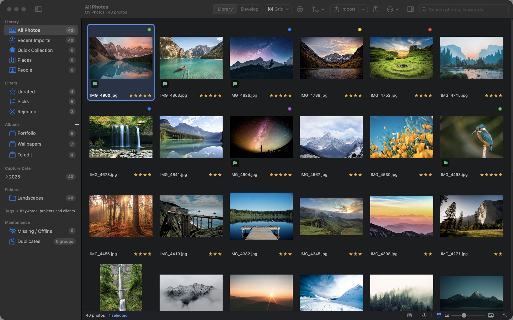
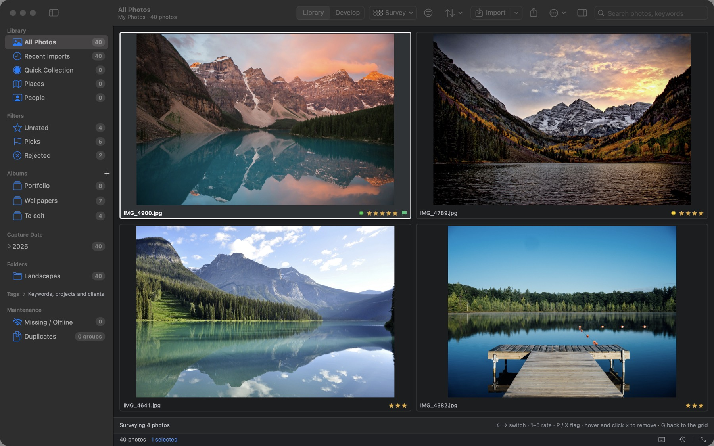
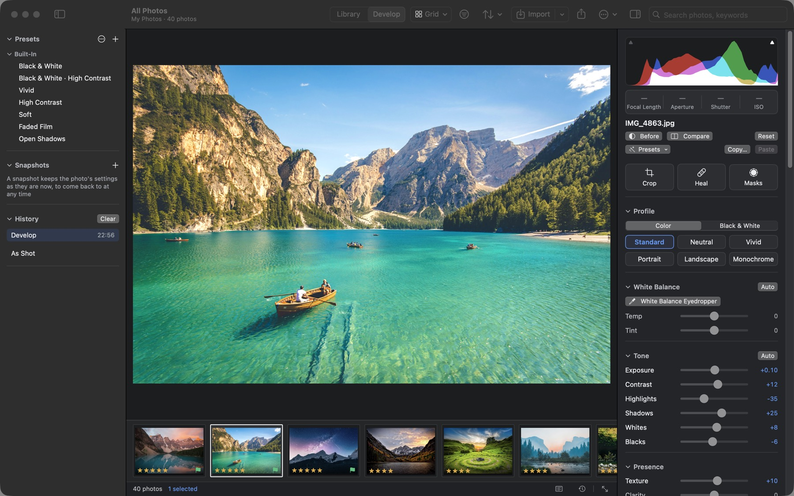
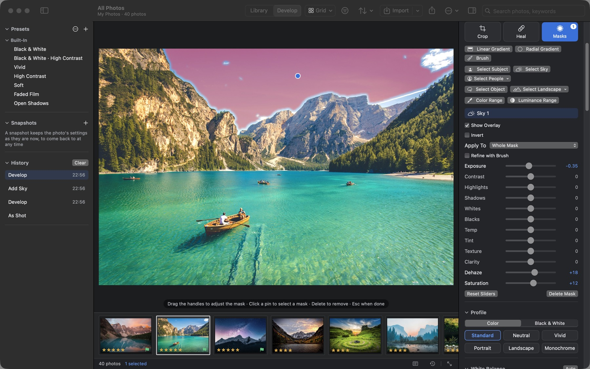
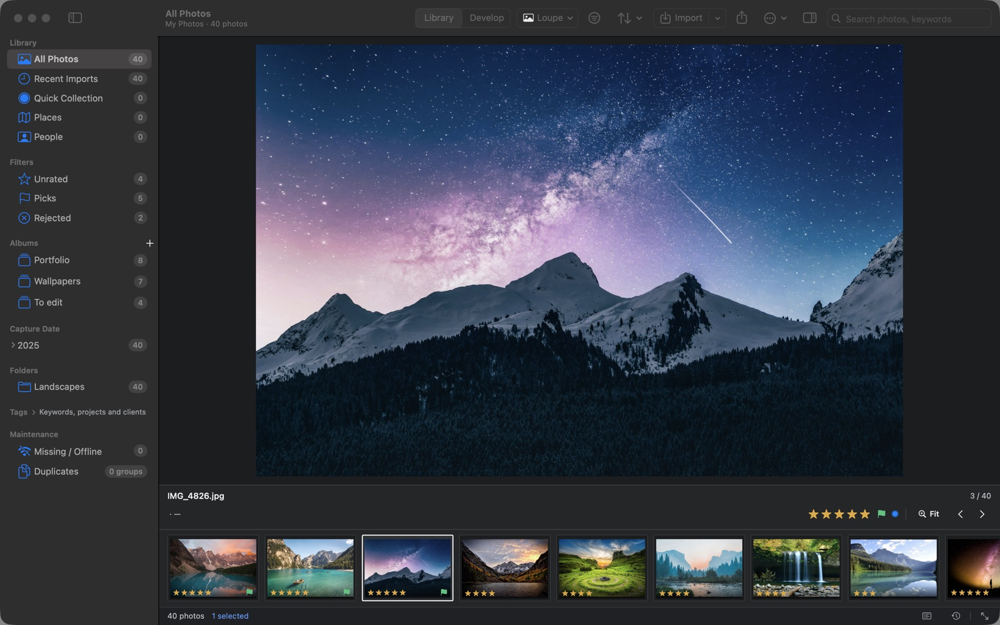
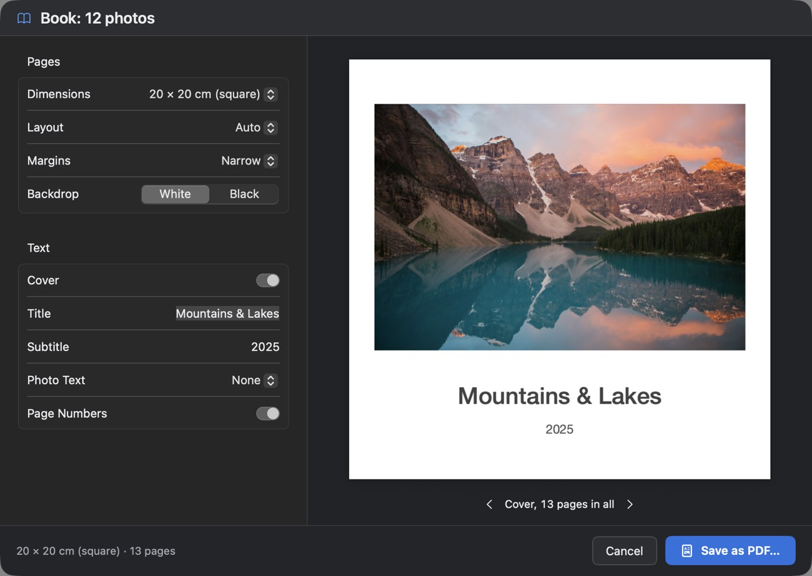

Your photo library and RAW editor, right on your Mac.
PhotoCatalog is a free, open-source photo manager and RAW editor for macOS in the style of Lightroom Classic: import, cull, organize and develop your photos, then share them as exports, prints and books. Your photos stay on your Mac, and your originals are never modified.

Cull
Cull fast, keep the best shot
- Grid, loupe, compare and survey views put a burst side by side
- Rate with the number keys, pick or reject with P and X, and move on automatically
- RAW+JPEG pairs show as one photo, and bursts stack by capture time
- Smart albums, album sets and a Quick Collection keep the keepers close

Develop
Non-destructive RAW development
Built on the macOS RAW engine: profiles and black and white, tone curve, color mixer, color grading, LUTs, detail and lens corrections, lens blur, Upright and soft proofing. Every step goes into the history so you can return to it, and presets exchange with Lightroom.

AI masks
Select the sky, the subject or a person in one click
Subject, sky, people, object and landscape masks come from models built into the app and run on your Mac, alongside gradients, brushes and color and luminance ranges. AI remove, denoise and super resolution run on your Mac too.

Organize
Organize everything, find anything
- Keywords, albums and smart albums; filter by date, camera and lens
- On-device face recognition, 99.4% on the LFW benchmark
- A map view, and locations matched from GPX tracks
- Exact and similar duplicates found for you
- Ratings, keywords and titles in XMP sidecars that Lightroom and Bridge read

Share
From export to photo book
Export with presets, output sharpening and watermarks; print through your printer's color profile; turn a slideshow into an MP4 video; and make web galleries and PDF photo books, previewed page by page.

Import
Folders, memory cards, cameras and iPhones, videos and tethered shooting. An interrupted import picks up where it stopped.
Merge and enhance
HDR and panorama merges, AI denoise, and super resolution that doubles the width and height.
AI assistant (optional)
Write titles, captions and keywords, find photos with a sentence, and develop from a described look, with Anthropic, any OpenAI-compatible service, or Ollama / LM Studio on your Mac.
Safe by design
Every edit can be undone. Catalog snapshots, and verified full backups that restore into a new library.
Built for big libraries
A 500,000-photo catalog is ready about five seconds after launch; filtering, sorting and searching take 0.1–0.35 s.
Chinese and English
The interface comes in Simplified Chinese and English, following your Mac's language or the one you choose in Settings.
Questions and answers
Is PhotoCatalog free?
Yes. PhotoCatalog is free and open source under the GPL-3.0, with no account, subscription or in-app purchases. The upcoming Mac App Store edition is free too.
Which Macs does it run on?
Macs with Apple silicon (M-series) running macOS 14 Sonoma or later. Intel Macs aren't supported.
Are my photos uploaded anywhere?
No. The catalog, previews and edits stay on your Mac, and face recognition, AI masks and denoise run on it. The app goes online only for the optional AI assistant, maps and update checks; see the privacy policy.
Does it work with Lightroom?
It can't open Lightroom catalogs (.lrcat), but it reads and writes the XMP sidecars Lightroom and Bridge use (ratings, labels, keywords, titles, captions and locations), and it imports and exports develop presets as .xmp files.
Which RAW formats does it open?
Canon (CR2, CR3), Nikon (NEF), Sony (ARW), Fujifilm (RAF), Olympus / OM System (ORF), Panasonic (RW2), Pentax (PEF), Samsung (SRW) and DNG. RAW files are decoded by the RAW engine built into macOS, so a camera works once macOS supports it. JPEG, HEIC, PNG, TIFF, GIF, WebP and BMP open too, as do MOV, MP4 and M4V videos.
Does it change my original files?
No. Edits are recorded in the catalog, and exports are new files. Metadata such as ratings and keywords can be written to XMP sidecars beside your originals; the originals themselves are left as they are.
Privacy
Your photos stay yours
No account, analytics or tracking, and nothing about your library is sent anywhere on its own. The app goes online only when you use the AI assistant, view a map or check for updates, and with an AI service on your Mac, your photos never leave it.
Get PhotoCatalog for free
- macOS 14 or later on Apple silicon
- Notarized by Apple, and updates itself from inside the app
- Coming to the Mac App Store